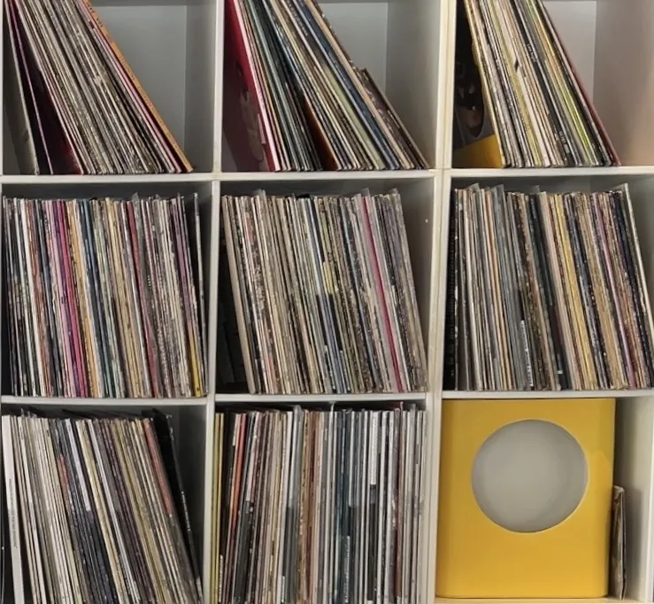
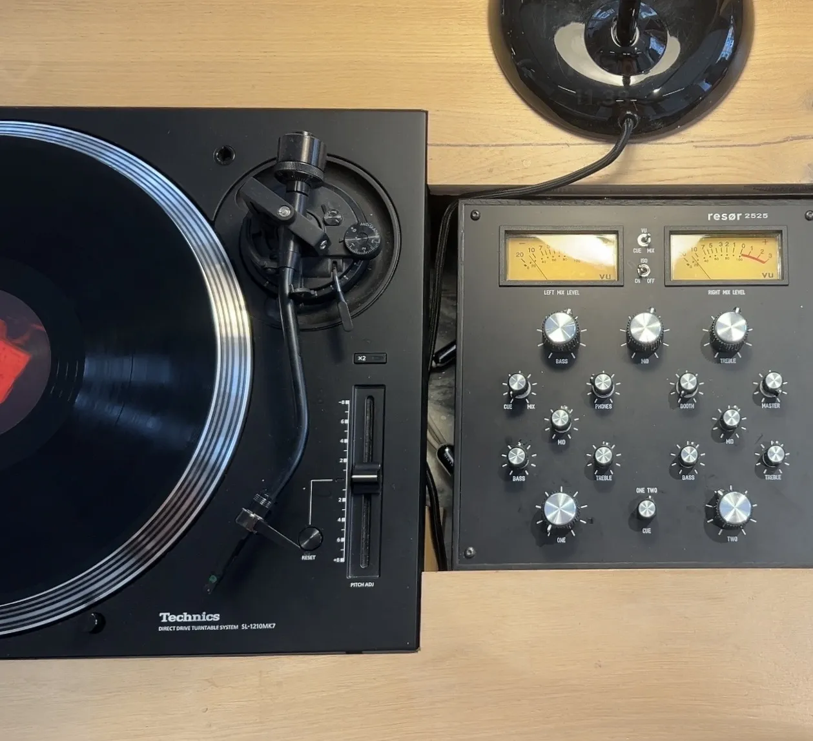

Music

Bird is an acoustic free space, where music played from vinyl has optimum conditions to flourish - yet never intimidating or damaging to the warm and accomodating atmosphere in the bar. Our acoustic walls, materials and panels
all contribute to an auditive pillow feel where the sound is crystally clear re-produced.
Every week, the vinyl decks are visited by local collectors and national as well as international selectors with a massive passion and endless love to the vast universe of vinyls within all low-fi genres.
The ambition is to inspire musically across most genres of music and our weekly list of invited professionals at the decks provides for a musical free space, where the guest always can rely on a soothing experience with lovely tunes coming
from the custom build speakers.
Music at bird is played to underline the quite - yet vibrant atmosphere and the guest will accordingly feel relaxed and welcome. Music is individually interpreted and in this we simply try to inspire instead of teaching.
Please follow our instagram account to get updated on our musc calendar, pop-ups, spirit tastings and special selector nights. Find us here
